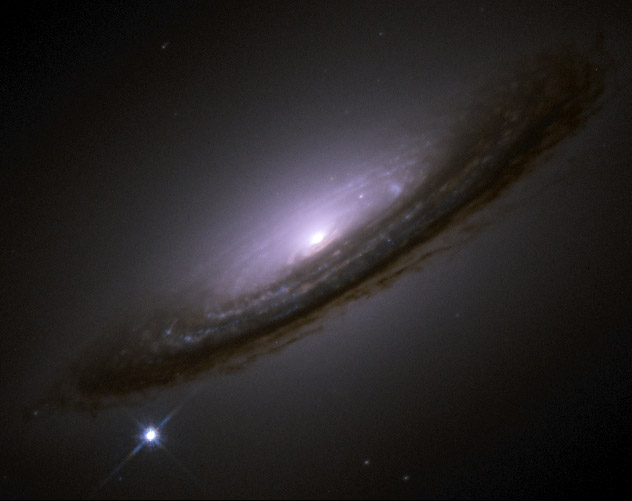

You can sign up for the direct SNEWS alert mailing
list
here.
We have a new mailing list for updates, announcements and discussion of SNEWS issues.
Old SNEWS mailing list archives
The Working Group mailing list archives can be found on
the  SNEWS
Working Group page.
SNEWS
Working Group page.

Supernova 1994D graces Galaxy NGC 4526 with its presence. Courtesy
of HubbleSite